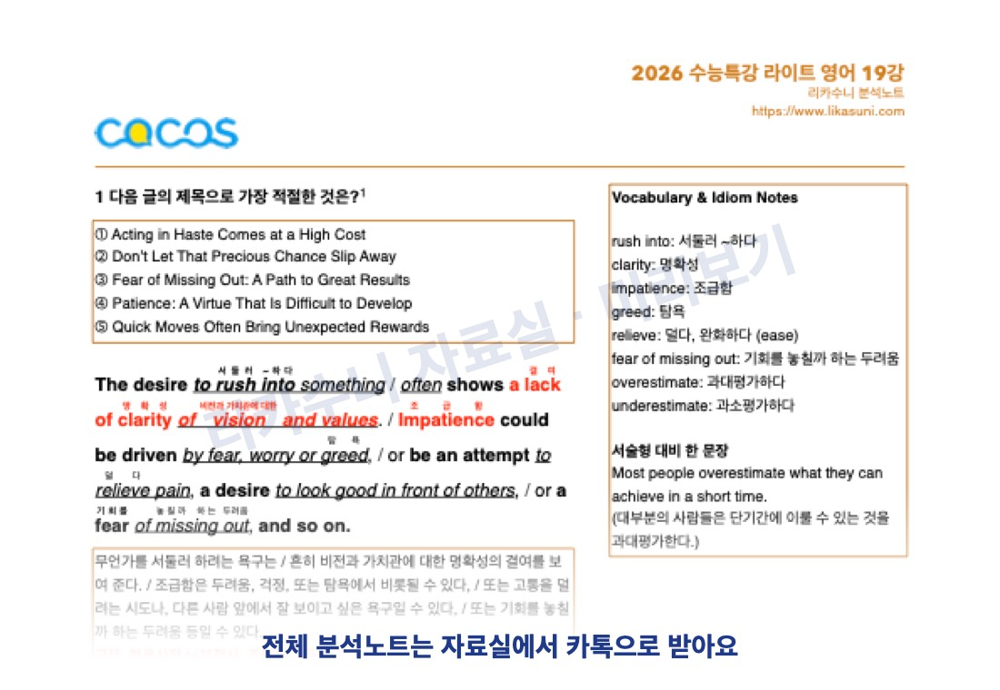

안녕하세요, 이매동 코코스학원 리카수니 원장입니다.
학생 요청으로 2026 수능특강 라이트(Light) 영어 19강 1번 분석노트를 만들었어요.
지문은 교재에 있으니 교재를 펴 놓고 함께 보세요.
· 교재: 2026 수능특강 라이트 영어 (EBS)
· 위치: 19강 1번 (글의 제목)
· 정답: ① (성급한 행동에는 큰 대가가 따른다는 제목)
무언가를 서둘러 하려는 마음은 비전과 가치관이 분명하지 않을 때 생기고, 조급함은 두려움·걱정·탐욕이나 '기회를 놓칠까 하는 두려움'에서 나와요.
사람들은 짧은 기간에 이룰 수 있는 것은 과대평가하고, 평생 이룰 수 있는 것은 과소평가한다는 흐름이에요.
글의 첫 부분(서두르려는 욕구 = 명확성의 결여)과 뒷부분(단기 성취 과대평가, 생각보다 시간이 많다)이 모두 '서두르지 말라'는 쪽을 가리켜요.
→ 서두름의 대가를 말하는 ①이 정답이에요.
② 기회를 놓치지 말라 → 글과 반대 방향(서두르라는 말)이에요.
③ 기회를 놓칠까 하는 두려움이 좋은 결과로 → 글에서는 조급함의 원인 중 하나일 뿐이에요.
④ 인내는 기르기 어렵다 → '어렵다'는 내용은 없어요.
⑤ 빠른 행동이 뜻밖의 보상을 → 역시 글과 반대예요.

1) The desire to rush into something
→ 형용사적 to부정사: '무언가를 서둘러 하려는 욕구'
2) 조동사 + 수동태 (could be + p.p. + by ~): '~에서 비롯될 수 있다'
3) 관계대명사 what 병렬: 과대평가하다 / 과소평가하다 뒤에 what 절이 나란히 와요
· rush into 서둘러 ~하다
· clarity 명확성
· impatience 조급함
· greed 탐욕
· relieve 덜다, 완화하다 (= ease)
· fear of missing out 기회를 놓칠까 하는 두려움
· overestimate 과대평가하다 ↔ underestimate 과소평가하다
분석노트 PDF 에 '서술형 대비 한 문장'(관계대명사 what 문장)과 해석을 정리해 두었어요.
끊어 읽기·해석·구문이 정리된 PDF 는 리카수니 자료실에서 카카오 로그인 후 카톡으로 받을 수 있어요.
수능특강 라이트 다른 강·번호도 요청할 수 있어요.
▶ 분석노트 요청하기 (리카수니 자료실)
https://data.likasuni.com/notes/#note-req
※ 지문 출처: 한국교육방송공사(EBS) 2026 수능특강 라이트 영어. 지문·선택지 원문과 전체 해석은 싣지 않았어요.
분당 이매동 코코스학원은 초등·중등·고등 영어와 수학을 가르쳐요.
수능특강·모의고사·내신 대비가 궁금하시면 편하게 문의해 주세요.
· 홈페이지: https://www.cocosedu.co.kr/
· 주소: 경기 성남시 분당구 판교로 476 2층